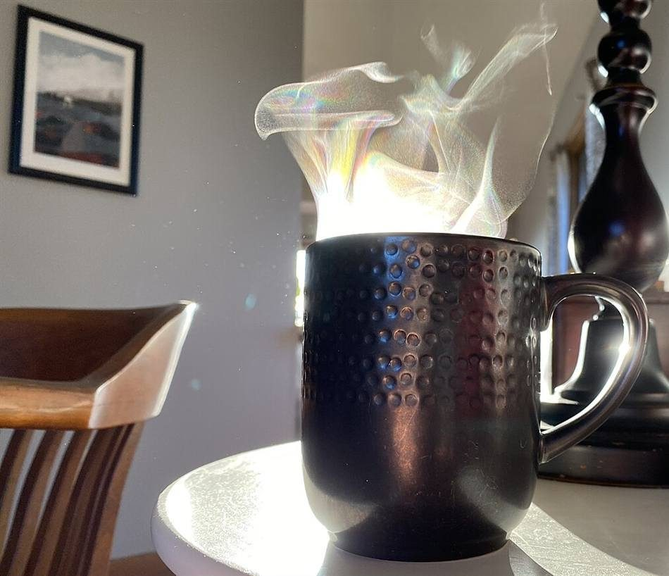

制作側の連想
となり同士を入れ替えて、順に並べる
お店の名前は「otonari」。由来は分かりません。制作側は、この響きから「となりどうし」を連想し、並んだものを、となり同士だけ入れ替えて少しずつ整えていく「バブルソート」という並べ替えの手順を思い浮かべました。このサイトはその連想で、5ページを「第0パス」から「第4パス」と呼び、ページごとに棒の並びが整っていきます。制作側の連想で、お店の理念・由来とは無関係です。
第0パス(ホーム)
第1パス(店のこと)
第2パス以降
階段に並べる
低いほうから、一段ずつ。
写真は瑞浪市やお店のものではありません。国外・撮影地不明のフリー素材を、高さの違う階段状に並べたイメージです。
 1
1 2
2 3
3
4 5
5- 小さなカップのイメージ(撮影地不明)
- 白いカップと豆のイメージ(撮影地不明)
- 抽出のイメージ(撮影地不明)
- 湯気のマグのイメージ(米国)
- 丸パンのイメージ(撮影地不明)
ご案内
お店のこと(確認できたものだけ)
| 所在地 | 〒509-6472 岐阜県瑞浪市釜戸町3147-8 |
|---|---|
| 電話 | 0572-51-7634 |
| 営業時間 | 準備中 |
| 定休日 | 準備中 |
| ご予約 | 準備中 |
| 駐車場 | 準備中 |
| SNS | Instagram @otonari_swallow |